妖刀系列---水月刀
首页
≮炫飞☆棋社≯
#1 妖刀系列---水月刀 作者：邓飞 发表时间：2009-4-16 10:18:08
妖刀系列---水月刀(由真心老师主讲)
水月刀,若在三手房下为白必胜刀,但若在禁一里下,黑仍有部分强防未解决,白胜率为百分之九十多左右
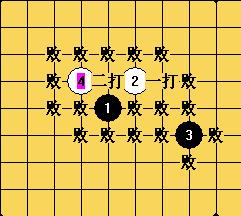
这个白4为最强防,下面列举针对一些败五,白6的正确应法
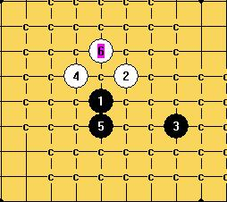
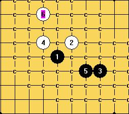
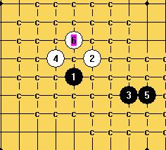
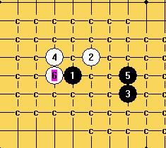

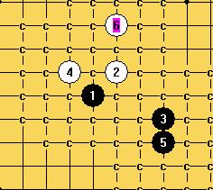
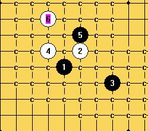
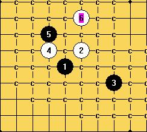
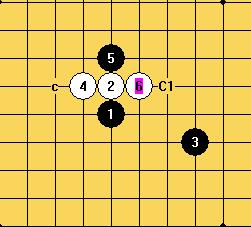
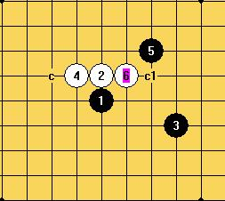
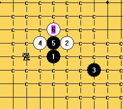
(上图此黑5为二打,已被终结为白必胜,但一些强防的杀法也比较复杂).
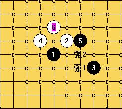
(上图此黑5为一打,黑7有两个强防,其中的强1是唯一能在禁一与白棋为之抗衡的一种下法,是白棋没有完全地毯的其中一个难点之一 )
［ 天天才 于 2009-4-16 13:15:06 时奖励此帖[金币加 20 威望加1］
#2 Re:妖刀系列---水月刀 作者：学生刀 发表时间：2009-4-16 10:40:00
=======上图对应的爱五子棋谱代码如下，以便你拆解：========
h8i9k7g9h9
======================================================
=======上图对应的爱五子棋谱代码如下，以便你拆解：========
h8i9k7g9j9h10
======================================================这个两个强吧
#3 Re:妖刀系列---水月刀 作者：邓飞 发表时间：2009-4-16 11:32:52
倒,有些图怎么没显示出来,发出来是一串字母呢
［ 天天才 于 2009-4-16 11:54:20 时奖励此帖[金币加 20 威望加1］
#4 Re:妖刀系列---水月刀 作者：方圆之外 发表时间：2009-4-17 11:33:34
就稍微扫了下。。。发现一楼最后那个图的强一。。。是黑必了。
#5 Re:妖刀系列---水月刀 作者：方圆之外 发表时间：2009-4-17 11:35:58
=======上图对应的爱五子棋谱代码如下，以便你拆解：========
h8i9k7g9j9h10j7j8h7
======================================================
=======上图对应的爱五子棋谱代码如下，以便你拆解：========
h8i9k7g9j9h10j7i11f8
======================================================
=======上图对应的爱五子棋谱代码如下，以便你拆解：========
h8i9k7g9j9h10j7f8i11
======================================================
#6 Re:妖刀系列---水月刀 作者：萧寒寒 发表时间：2009-4-17 12:16:35
=======上图对应的爱五子棋谱代码如下，以便你拆解：========
h8i9k7g9j9h10j7i11f8i12i8j8k10h7
======================================================这怎么杀？
#7 Re:妖刀系列---水月刀 作者：逆刃 发表时间：2009-4-17 16:13:28
这个其实是个骗，我以前被骗过，所以铭记于心，呵呵。
#8 Re:妖刀系列---水月刀 作者：学生刀 发表时间：2009-4-17 16:16:02
最后一图强一黑必胜？ 还是黑骗
#9 Re:妖刀系列---水月刀 作者：忧郁的双眼 发表时间：2009-4-17 16:22:02
发妖刀那儿
偶给你加威望
#10 Re:妖刀系列---水月刀 作者：茗弈如梦 发表时间：2009-4-20 20:20:36
=======上图对应的爱五子棋谱代码如下，以便你拆解：========
h8i9k7g9j9h10j7i11f8i12i8j8k10h7l7m7k6i13i10h9h11k8l8
======================================================楼六那个败了
#11 Re:妖刀系列---水月刀 作者：萧寒寒 发表时间：2009-4-20 21:02:16
=======上图对应的爱五子棋谱代码如下，以便你拆解：========
h8i9k7g9j9h10j7i11f8i12i8j8k10h7l7m7k6i13i10j12k13f12g11h12g12h9
======================================================这样呢？
#12 Re:妖刀系列---水月刀 作者：369852 发表时间：2009-5-27 16:25:49
垃圾，欺负别人不会
［ 失落刀 于 2009-5-27 17:01:49 时惩罚此帖，发帖者[金币减20 威望减1］
#13 Re:妖刀系列---水月刀 作者：茗弈南极的绿洲 发表时间：2009-6-18 14:01:28
=======上图对应的爱五子棋谱代码如下，以便你拆解：========
h8i9k7j7
======================================================这个4之后又是什么情况呢？
#14 Re:妖刀系列---水月刀 作者：gerbo 发表时间：2009-6-20 21:51:33
=======上图对应的爱五子棋谱代码如下，以便你拆解：========
h8i9k7j7i6
====================================================== 这个5个人首选..
#15 Re:妖刀系列---水月刀 作者：wrwak 发表时间：2009-6-20 21:53:17
=======上图对应的爱五子棋谱代码如下，以便你拆解：========
h8i9g11f10e10o1j9
======================================================2打 
#16 Re:妖刀系列---水月刀 作者：gerbo 发表时间：2009-6-20 22:05:24
LS的点好强,刚只分析了我15的那个点,后来继续看了16L的点,感觉16L的点都下的白没啥机会..
#17 Re:妖刀系列---水月刀 作者：wrwak 发表时间：2009-6-20 22:21:00
4 不同，以前无意拆过一下 黑优
#18 Re:妖刀系列---水月刀 作者：gerbo 发表时间：2009-6-20 22:23:36
 ...当做下图了.
...当做下图了.
=======上图对应的爱五子棋谱代码如下，以便你拆解：========
h8i9k7j7i10
======================================================这个5下的白没点机会.
#19 Re:妖刀系列---水月刀 作者：风铃 发表时间：2009-11-6 1:53:24
请问这个6怎么下啊``我迷糊
=======上图对应的爱五子棋谱代码如下，以便你拆解：========
h8i9k7g9j9g10
======================================================
#20 Re:妖刀系列---水月刀 作者：风铃 发表时间：2009-11-6 1:55:38
我自己能下的2个7怎么都必败的 7下哪？
=======上图对应的爱五子棋谱代码如下，以便你拆解：========
h8i9k7g9j9g10j8i10
======================================================
=======上图对应的爱五子棋谱代码如下，以便你拆解：========
h8i9k7g9j9g10g8h10
======================================================
#21 Re:妖刀系列---水月刀 作者：26 发表时间：2009-11-12 16:30:57
=======上图对应的爱五子棋谱代码如下，以便你拆解：========
h8i9k7g9j9g10h7
======================================================你看看这个7吧。
#22 Re:妖刀系列---水月刀 作者：许相公 发表时间：2009-12-3 12:34:39
=======上图对应的爱五子棋谱代码如下，以便你拆解：========
h8i9k7g9j9g10h7g11g8h10j8i8j10j7h9i11
======================================================黑棋有禁的话白扯，必死无疑
#23 Re:Re:妖刀系列---水月刀 作者：白河愁 发表时间：2009-12-3 20:31:15
引用：
原文由 许相公 发表于 2009-12-3 12:34:39 :
=======上图对应的爱五子棋谱代码如下，以便你拆解：========
h8i9k7g9j9g10h7g11g8h10j8i8j10j7h9i11
======================================================黑棋有禁的话白扯，必死无疑
 搞什么啊。。这不是简单黑胜么
搞什么啊。。这不是简单黑胜么
=======上图对应的爱五子棋谱代码如下，以便你拆解：========
h8i9k7g9j9g10h7g11g8h10j8i8j5i6j7
======================================================
#24 Re:妖刀系列---水月刀 作者：lfzxdh 发表时间：2009-12-4 19:07:48